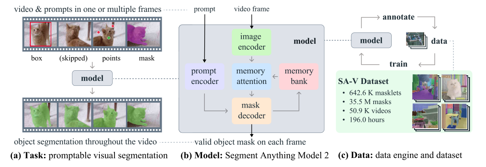
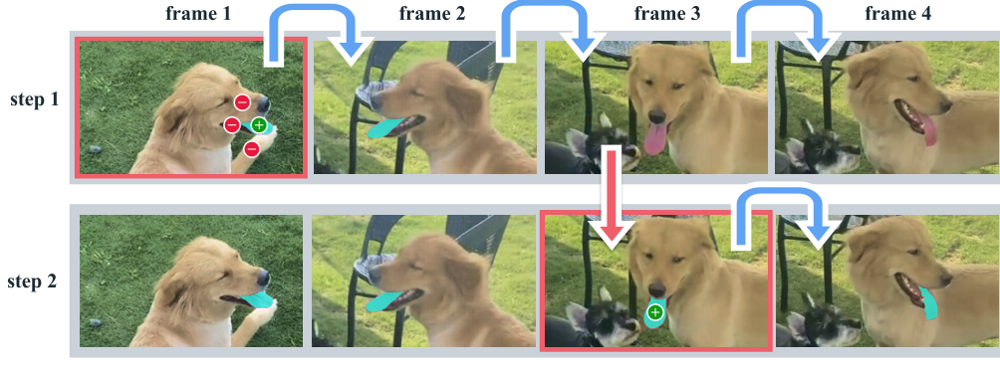
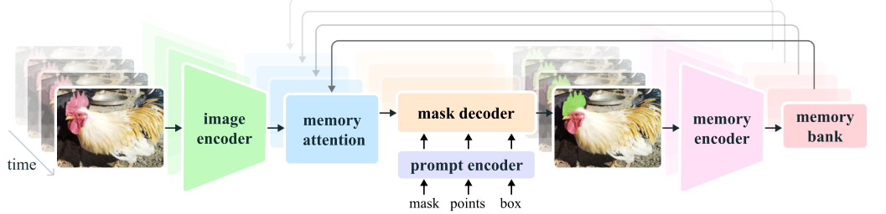
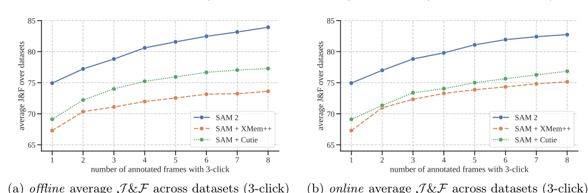

Background & Motivation
SAM 2 是 SAM 的影片版續作:一個帶 streaming memory(串流記憶) 的統一 transformer,可在影片任一幀用點/框/遮罩提示,即時分割並沿時間軸追蹤任何物件(把影像視為單幀影片)。它在互動式影片分割上用少 3× 的互動就達到更高精度,在影像分割上比 SAM 更準且快 6×,並用「模型在環路中(model-in-the-loop)」的資料引擎建出 35.5M 遮罩的 SA-V 資料集(53× 大)。
SAM 2 is SAM's video sequel: a unified transformer with streaming memory that, from clicks/boxes/masks on any frame, segments and tracks any object through a video in real time (an image is a single-frame video). On interactive video segmentation it reaches higher accuracy with 3× fewer interactions; on image segmentation it is more accurate than SAM and 6× faster; and a model-in-the-loop data engine builds the 35.5M-mask SA-V dataset (53× larger).

如果只有 30 秒In 30 seconds
- 問題 — SAM 只做靜態影像分割,但真實世界會動;現有影片分割模型與資料集無法「segment anything in videos」——類別受限、只標整物不標部件、且無法互動式修正錯誤。
- Problem — SAM only segments static images, yet the world moves; existing video models and datasets cannot "segment anything in videos" — class-limited, whole-object-only (no parts), and no way to interactively fix mistakes.
- 任務 — 定義 Promptable Visual Segmentation(PVS):把 SAM 的可提示分割推廣到影片,可在任一幀提示、可反覆用額外提示修正 masklet。影像 SA 與傳統 VOS 都是 PVS 的特例。
- Task — Define Promptable Visual Segmentation (PVS): SAM's promptable segmentation generalized to video, promptable on any frame and iteratively refinable. Image SA and classic VOS are special cases of PVS.
- 方法 — 給 SAM 架構加上 streaming memory:逐幀串流處理,用 memory attention 把當前幀 cross-attend 到 memory bank(過去幀 + 被提示幀 + object pointers),記憶為空時就退化成 SAM。
- Method — Add streaming memory to the SAM architecture: process frames one at a time; memory attention cross-attends the current frame to a memory bank (past frames + prompted frames + object pointers). With empty memory it reduces to SAM.
- 結果 — 互動影片分割少 3× 互動且更準;半監督 VOS、影像 SA 全面 SOTA;影像比 SAM 快 6×;SA-V 資料集遮罩量 53×於任何現有 VOS 資料集,且資料引擎快 8.4×。
- Results — Interactive video segmentation with 3× fewer interactions and higher accuracy; SOTA on semi-supervised VOS and image SA; 6× faster than SAM on images; SA-V has 53× more masks than any existing VOS dataset, collected by an 8.4×-faster data engine.
領域脈絡Field context
前作 Segment Anything(SAM,Kirillov et al. 2023) 用「可提示分割 + SA-1B 大資料」開創了影像分割的基礎模型,zero-shot 能力讓它被廣泛應用(醫療、遙測、偽裝物偵測⋯)。但影像只是世界的靜態快照,AR/VR、機器人、自駕、影片剪輯都需要「時間維度」上的分割。
The predecessor Segment Anything (SAM, Kirillov et al. 2023) established an image-segmentation foundation model via "promptable segmentation + the large SA-1B dataset," whose zero-shot ability drove wide adoption (medical, remote sensing, camouflaged-object detection…). But an image is only a static snapshot; AR/VR, robotics, autonomous driving and video editing all need segmentation along the temporal axis.
影片分割自成一個領域:互動式 VOS(iVOS) 常把 SAM 之類的影像工具接上 mask/point 追蹤器,但追蹤器對某些物件失效、SAM 在影片幀上不一定準、且沒有機制互動修正——出錯只能整幀重畫再從頭追蹤。半監督 VOS 則假設第一幀已有完整遮罩,但那個高品質遮罩本身就難標。
Video segmentation is its own field: interactive VOS (iVOS) often bolts an image tool like SAM onto a mask/point tracker, but the tracker fails on some objects, SAM is not always accurate on video frames, and there is no interactive-correction mechanism — an error means re-annotating a whole frame and restarting the track. Semi-supervised VOS assumes a full first-frame mask, but that high-quality mask is itself costly to draw.
資料面上,DAVIS、YouTube-VOS、MOSE 等規模有限、且圍繞特定類別(人、車、動物)、只標整物不標部件,不足以支撐「segment anything」。SAM 2 的答案是:一次補齊「任務 + 模型 + 資料」三塊。
On data, DAVIS, YouTube-VOS, MOSE and others are size-limited, centered on specific classes (people, vehicles, animals), and annotate whole objects not parts — too thin to support "segment anything." SAM 2's answer: fill all three at once — task + model + dataset.
SAM 2 精準複製了 SAM 的成功配方——「定義一個可提示的通用任務 + 造一個能自我加速標註的資料引擎 + 一個簡單可規模化的模型」——只是把戰場從影像搬到影片。真正的新東西其實只有一個:記憶(memory)。影片相對影像多出的就是「時間」,而記憶正是把時間資訊帶進 SAM 的最小充分改動。
SAM 2 faithfully replays SAM's winning recipe — "define one promptable general task + build a self-accelerating data engine + a simple, scalable model" — just moving the arena from images to video. The one genuinely new ingredient is memory. What video adds over images is "time," and memory is the minimal sufficient change that carries temporal information into SAM.
核心洞見 · KEY INSIGHTSKEY INSIGHTS
這篇值得帶走的不只是「SAM 出影片版了」,而是底下這幾個觀念:
What's worth taking away is more than "SAM now does video" — it's these ideas:
- 影像 = 單幀影片,用一個模型統一。 不為影片另造模型,而是把影像分割當成記憶為空的特例,同一個 SAM 2 同時刷新影像與影片 SOTA。
- Image = single-frame video, unified in one model. Rather than a separate video model, image segmentation is the empty-memory special case; one SAM 2 sets SOTA on both.
- Streaming memory 就是把「時間」帶進 SAM 的關鍵。 memory bank 存過去幀 + 被提示幀 + object pointers,memory attention 用 cross-attention 讀它——這讓「在第 3 幀點一下就能修好整段」成為可能,而非重畫。
- Streaming memory is how "time" enters SAM. The memory bank stores past frames + prompted frames + object pointers; memory attention reads it via cross-attention — this is what lets "one click on frame 3 fix the whole masklet" instead of redrawing.
- 資料引擎是共生飛輪。 用當前模型加速標註 → 更多資料 → 更強模型 → 又更快標註。三階段把每幀標註從 37.8 秒壓到 4.5 秒(8.4×),這是能造出 53× 大資料集的真正原因。
- The data engine is a symbiotic flywheel. Use the current model to speed annotation → more data → a stronger model → faster annotation again. Three phases cut per-frame time from 37.8s to 4.5s (8.4×) — the real reason a 53×-larger dataset was feasible.
- 「可提示 + 可互動修正」勝過「一次到位」。 PVS 不追求零互動,而是讓每次互動的邊際效益最大化——這才是把分割做成「可用工具」而非「跑分模型」的關鍵。
- "Promptable + interactively fixable" beats "one-shot perfect." PVS doesn't chase zero interaction; it maximizes the marginal value of each interaction — the key to a usable tool rather than a benchmark model.
- 簡單勝過花俏。 記憶就直接存特徵到 FIFO 佇列(不用 GRU);影像編碼器換成更小但更有效的 Hiera;移除 RPB 換來速度。多處「少即是多」的工程選擇。
- Simple beats fancy. Memory is just features in a FIFO queue (no GRU); the image encoder is the smaller-but-better Hiera; removing RPB buys speed. Many "less is more" engineering calls.
Problem Diagnosis
現況 vs 痛點Status quo vs pain points
| 現有做法Existing approach | 它的痛點Its pain point |
|---|---|
| SAM 影像可提示分割promptable image seg | 只吃單張靜態影像,沒有時間概念;逐幀套用既慢又不連貫(物件在幀間會漂移、閃爍)。Handles only a single static image, no notion of time; applying it frame-by-frame is slow and incoherent (objects drift/flicker across frames). |
| SAM + 追蹤器SAM + tracker (iVOS) | 解耦的拼裝:追蹤器可能對某些物件失效、SAM 在影片幀不一定準,而且出錯無法互動修正——只能整幀重畫、從頭再追。A decoupled bolt-on: the tracker fails on some objects, SAM isn't reliable on video frames, and errors can't be interactively fixed — you re-annotate a whole frame and restart the track. |
| 半監督 VOS 模型Semi-supervised VOS | 假設第一幀已有完整 GT 遮罩,但那個遮罩本身難標;且多針對特定類別、不支援點/框互動。Assumes a full GT mask on frame 1 — itself hard to draw; and is class-specific, without click/box interaction. |
| 既有影片資料集Existing video datasets | 規模小、類別窄、只標整物(人/車/動物),不含部件與長尾物件,無法支撐「anything」。Small, class-narrow, whole-object-only (people/vehicles/animals), no parts or long-tail objects — cannot support "anything." |
核心問題:「能不能有一個統一模型,像 SAM 那樣可提示、可互動,但在影像與影片上都能即時 segment anything?」
The core question: "Can one unified, SAM-like promptable and interactive model segment anything, in real time, across both images and video?"

Gap 表 — 誰缺什麼,SAM 2 怎麼補Gap table — who lacks what, and how SAM 2 fills it
| 面向Axis | 限制Limitation | SAM 2 如何補上How SAM 2 fills it |
|---|---|---|
| 任務Task | SA 只在影像;VOS 只吃第一幀遮罩。SA is image-only; VOS takes only a first-frame mask. | 定義 PVS:任一幀、任意提示、可反覆修正;SA/VOS 都是其特例。Defines PVS: any frame, any prompt, iteratively refinable; SA/VOS are special cases. |
| 模型Model | SAM 無時間記憶;拼裝式追蹤器無法互動修正。SAM has no temporal memory; bolt-on trackers can't be interactively corrected. | 加 streaming memory:memory bank + memory attention,單次點擊即可跨幀修正。Adds streaming memory: a memory bank + memory attention, so one click corrects across frames. |
| 資料Data | 影片資料集小、窄、無部件標註。Video datasets are small, narrow, part-free. | SA-V:35.5M 遮罩、含部件、地理多樣,53× 大。SA-V: 35.5M masks incl. parts, geographically diverse, 53× larger. |
| 速度Speed | SAM 的 ViT 編碼器重;逐幀處理慢。SAM's ViT encoder is heavy; per-frame processing is slow. | 改用 MAE-Hiera 編碼器 + 串流,影像快 6×、影片即時(30–44 FPS)。Uses an MAE-Hiera encoder + streaming: 6× faster on images, real-time video (30–44 FPS). |
SAM 2 不是只解「影片分割精度」這一個技術點,而是同時把任務、模型、資料、速度四件事一起補齊——這正是「基礎模型」而非「單篇 SOTA」的打法。它的最強論述不是任何單一數字,而是「一個模型、一套資料、一種互動範式,覆蓋影像與影片」的整體性。
SAM 2 doesn't just fix "video-segmentation accuracy"; it closes task, model, data, and speed together — the foundation-model playbook, not a single-SOTA paper. Its strongest claim is not any one number but the wholeness: one model, one dataset, one interaction paradigm, spanning images and video.
Core Method
任務定義:PVS 與 maskletTask setup: PVS and masklets
給一段影片的幀序列 \((I_t)_{t=1}^{T}\),使用者可在任一幀提供提示 —— 正/負點、框、或遮罩 —— 來定義或修正目標物件。模型須輸出該物件的時空遮罩(masklet) \((\mathbf{m}_t)_{t=1}^{T}\),即每一幀上的分割遮罩:
Given a video's frames \((I_t)_{t=1}^{T}\), the user may prompt any frame — positive/negative clicks, a box, or a mask — to define or correct a target object. The model must output the object's spatio-temporal mask (a "masklet") \((\mathbf{m}_t)_{t=1}^{T}\), i.e. a segmentation on every frame:
收到提示後模型須在該幀立即回應一個有效遮罩,並傳播到全片;之後可在任意幀追加提示來反覆修正。影像被視為單幀影片(\(T=1\)),此時記憶為空,模型行為等同 SAM。
On receiving a prompt the model must respond immediately on that frame with a valid mask and propagate it across the video; extra prompts on any frame iteratively refine it. An image is a single-frame video (\(T=1\)); then memory is empty and SAM 2 behaves exactly like SAM.
架構:SAM + streaming memoryArchitecture: SAM + streaming memory

五個關鍵元件The five key components
| 元件Component | 怎麼做 / 為何重要How it works / why it matters |
|---|---|
| Image encoder | 用 MAE 預訓練的 Hiera(階層式),整段互動只跑一次提供無條件特徵;階層特徵供解碼時取多尺度。比 SAM 的 ViT 更小更快。An MAE-pretrained Hiera (hierarchical), run once per frame to give unconditioned features; multiscale features feed decoding. Smaller and faster than SAM's ViT. |
| Memory attention | 堆疊 \(L\) 個 transformer block,每塊 self-attention → cross-attention(到記憶與 object pointers)→ MLP。用 vanilla attention 以享受 FlashAttention 等高效核。\(L\) transformer blocks, each self-attention → cross-attention (to memories & object pointers) → MLP. Vanilla attention, to benefit from efficient kernels (FlashAttention). |
| 提示編碼器 + 遮罩解碼器Prompt enc. + mask dec. | 提示編碼器與 SAM 相同。解碼器為 two-way blocks;對模糊提示預測多個遮罩取最高 IoU;新增 occlusion head 預測「本幀是否有此物件」(遮擋/消失時);並用 skip connection 引入高解析特徵。The prompt encoder is identical to SAM. The decoder uses two-way blocks; for ambiguous prompts it predicts multiple masks and keeps the highest-IoU one; a new occlusion head predicts whether the object is present on this frame (occlusion/disappearance); skip connections inject high-res features. |
| Memory encoder | 把輸出遮罩卷積降採樣,與影像編碼器的無條件幀特徵逐元素相加,再經輕量卷積融合 —— 簡單而便宜。Convolutionally downsamples the output mask and element-wise sums it with the encoder's unconditioned frame features, fused by light conv layers — simple and cheap. |
| Memory bank | 兩個 FIFO 佇列:最近 \(N\) 幀 + 最多 \(M\) 個被提示幀(皆存為空間特徵圖);外加一串 object pointers(來自解碼器輸出 token 的輕量語意向量)。只在最近 \(N\) 幀嵌入時間位置(表短期運動),被提示幀不嵌。Two FIFO queues: the last \(N\) frames + up to \(M\) prompted frames (both as spatial feature maps); plus a list of object pointers (lightweight semantic vectors from decoder output tokens). Temporal position is embedded only into the \(N\) recent frames (short-term motion), not prompted frames. |
訓練與損失Training & loss
在影像與影片資料上聯合訓練,並模擬互動:抽 8 幀序列、隨機選最多 2 幀給提示,並按 GT 與模型預測取樣修正點擊;初始提示為 GT 遮罩(0.5)、正點(0.25)或框(0.25)。監督用線性組合:
Jointly trained on image and video data with simulated interaction: sample 8-frame sequences, randomly pick up to 2 frames to prompt, and sample corrective clicks from GT and model predictions; initial prompts are a GT mask (0.5), a positive click (0.25), or a box (0.25). The supervision is a linear combination:
遮罩用 focal + dice(權重 20:1)、IoU 預測用 ℓ1/MAE、物件是否存在用 cross-entropy,比例 20:1:1:1。多遮罩時只監督「分割損失最低」的那個;某幀無 GT 遮罩時不監督遮罩但仍監督 occlusion head。先在 SA-1B 預訓練(~90k 步),再於 SA-1B+Internal+SA-V 全量訓練(~150k 步),解析度 1024、AdamW、bfloat16。
Masks use focal + dice (20:1), IoU prediction uses ℓ1/MAE, object-presence uses cross-entropy — a 20:1:1:1 ratio. With multiple masks, only the lowest-segmentation-loss one is supervised; on frames without a GT mask, masks are not supervised but the occlusion head still is. Pre-train on SA-1B (~90k steps), then full-train on SA-1B+Internal+SA-V (~150k steps) at resolution 1024, AdamW, bfloat16.
符號白話對照Symbols in plain words
| \((I_t)_{t=1}^{T}\) | 輸入影片的 \(T\) 幀;影像即 \(T=1\)。The \(T\) input frames; an image is \(T=1\). |
| \((\mathbf{m}_t)_{t=1}^{T}\) | masklet —— 目標物件在每一幀的分割遮罩(時空遮罩)。The masklet — the target's per-frame segmentation (a spatio-temporal mask). |
| \(N,\ M\) | 記憶庫 FIFO 佇列長度:最近 \(N\) 幀(預設 6)+ 最多 \(M\) 個被提示幀。Memory-bank FIFO lengths: last \(N\) frames (default 6) + up to \(M\) prompted frames. |
| \(L\) | memory attention 的 transformer block 層數(self+cross+MLP)。Number of memory-attention transformer blocks (self+cross+MLP). |
| \(\mathcal{J}\&\mathcal{F}\) | 影片分割標準指標:區域 IoU(\(\mathcal{J}\))與邊界 F-score(\(\mathcal{F}\))的平均,越高越好。The standard VOS metric: mean of region IoU (\(\mathcal{J}\)) and boundary F-score (\(\mathcal{F}\)); higher is better. |
| object pointers | 從解碼器輸出 token 取的輕量向量,攜帶物件的高階語意,供 memory attention cross-attend。Lightweight vectors from decoder output tokens carrying high-level object semantics, cross-attended by memory attention. |
Experimental Evidence
互動式影片分割(9 個 zero-shot 資料集,3-click)Interactive video segmentation (9 zero-shot datasets, 3-click)

半監督 VOS:17 資料集平均 \(\mathcal{J}\&\mathcal{F}\)(第一幀提示)Semi-supervised VOS: avg \(\mathcal{J}\&\mathcal{F}\) over 17 datasets (first-frame prompt)
| 方法Method | 1-click | 3-click | 5-click | box | GT mask |
|---|---|---|---|---|---|
| SAM+XMem++ | 56.9 | 68.4 | 70.6 | 67.6 | 72.7 |
| SAM+Cutie | 56.7 | 70.1 | 72.2 | 69.4 | 74.1 |
| SAM 2 | 64.7 | 75.3 | 77.6 | 74.4 | 79.3 |
不論用點、框、還是完整遮罩當提示,SAM 2 在各種提示型態上都全面領先;連對手最擅長的「GT 遮罩輸入」也贏 5 分以上。
Whether prompted by clicks, a box, or a full mask, SAM 2 leads across every prompt type — even by 5+ points on the "GT mask" input the baselines are built for.
影像分割(SA task,SA-23,1-click mIoU)+ SOTA VOSImage segmentation (SA task, SA-23, 1-click mIoU) + SOTA VOS
| 模型 / 設定Model / setting | SA-23 All | FPS |
|---|---|---|
| SAM (SA-1B) | 58.1 | 21.7 |
| SAM 2 (SA-1B) | 58.9 | 130.1 |
| SAM 2 (our mix) | 61.9 | 130.1 |
即使只用 SA-1B(與 SAM 同資料),SAM 2 也更準且快 6×(58.9 vs 58.1,130 vs 22 FPS)——主要來自更有效的 Hiera 編碼器;加上影片資料混訓再升到 61.9。
Even on SA-1B alone (same data as SAM), SAM 2 is more accurate and 6× faster (58.9 vs 58.1; 130 vs 22 FPS) — mainly from the more effective Hiera encoder; mixing in video data lifts it to 61.9.
| VOS SOTA(\(\mathcal{J}\&\mathcal{F}\))VOS SOTA (\(\mathcal{J}\&\mathcal{F}\)) | MOSE | DAVIS17 | SA-V test | LVOS |
|---|---|---|---|---|
| Cutie-base+ (前最佳)(prev best) | 71.7 | 88.1 | 62.8 | — |
| SAM 2 (Hiera-L) | 77.9 | 90.7 | 78.4 | 78.0 |
在傳統 VOS 上也 SOTA,且在開放世界的 SA-V test 上把 62.8 拉到 78.4(前人多在此飽和,凸顯「segment anything」的差距)。速度:Hiera-B+ 43.8 FPS、Hiera-L 30.2 FPS,皆即時。
SOTA on classic VOS too, and it lifts open-world SA-V test from 62.8 to 78.4 (where prior work plateaus — exposing the gap to "segment anything"). Speed: Hiera-B+ 43.8 FPS, Hiera-L 30.2 FPS, both real-time.
資料引擎:越滾越快、資料越多越準Data engine: faster loop, more data → more accuracy
| 階段Phase | 每幀時間Time/frame | 加速Speedup | SA-V val \(\mathcal{J}\&\mathcal{F}\)SA-V val |
|---|---|---|---|
| 1 · SAM only | 37.8 s | 1× | 53.0 |
| 2 · SAM + SAM 2 Mask | 7.4 s | 5.1× | 58.8 |
| 3 · SAM 2 | 4.5 s | 8.4× | 62.5 |
| + Auto | — | — | 63.2 |
模型越強、標註越快、資料越好,正向飛輪成立。加入資料引擎資料使 9 個 zero-shot 資料集平均 +12.1%;資料量與精度呈冪律關係(power law)。最終 SA-V:50.9K 影片、642.6K masklets、35.5M masks(53× 大)。
Stronger model → faster annotation → better data: the flywheel holds. Adding data-engine data gives +12.1% average on 9 zero-shot datasets; accuracy scales with data as a power law. Final SA-V: 50.9K videos, 642.6K masklets, 35.5M masks (53× larger).
消融重點Key ablations
| 拿掉/改動Remove / change | 觀察Observation |
|---|---|
| 只用 VOS 資料訓練Train on VOS data only | in-domain 尚可,但 9 zero-shot 掉到 59.7;加資料引擎資料 +12.1%。OK in-domain but 9 zero-shot drops to 59.7; data-engine data adds +12.1%. |
| GRU recurrent memory | 幾乎無益;直接存 FIFO 更簡單快速。Barely helps; direct FIFO storage is simpler/faster. |
| 去掉 object pointersDrop object pointers | 9 zero-shot 幾乎不變,但 SA-V、長片 LVOS 明顯變差 → 保留。9 zero-shot ~flat, but SA-V and long-video LVOS clearly worsen → keep them. |
| 解析度 512→1024 / 幀數 4→8Res 512→1024 / frames 4→8 | 解析度與幀數越多越好,故選 1024 + 8 幀;記憶預設 6 幀。More resolution and frames both help; hence 1024 + 8 frames; default 6 memories. |
實驗證明了什麼:一個統一、可提示、有記憶的模型,配上大規模多樣資料,能同時在影像與影片、互動與非互動設定上勝出。沒證明的:在極長影片的累積漂移、多物件同場景的效率與相互干擾(見 CRITIQUE)。
What the experiments prove: a unified, promptable, memory-equipped model plus large diverse data wins across images and video, interactive and not. What they don't: drift over very long videos, and efficiency/interference with many objects in one scene (see CRITIQUE).
Critical Reading
可被質疑的點Contestable points
- 多物件是「跑 K 次」而非真正一起解:SAM 2 對每個物件各自處理、無物件間溝通(僅共用每幀影像特徵)。多物件場景既不省算力,也容易在外觀相近的物件間混淆(作者用「多顆一樣的雜耍球」為例)。這是架構層級的限制,非調參能解。
- Multi-object is "run K times," not a joint solve: SAM 2 processes each object separately with no inter-object communication (only shared per-frame features). Crowded scenes are neither compute-efficient nor robust to look-alike objects (the authors' own "identical juggling balls"). An architectural limit, not a tuning issue.
- 自動標註的循環風險:642.6K masklets 中有 451.7K 是 SAM 2 自己生成的「Auto」masklet。用模型標的資料再訓練同一模型,可能自我強化既有偏好、低估失敗模式;雖有人工驗證關卡,但「+Auto」在部分 zero-shot 上的增益其實有限(63.2→63.2 級距)。
- Auto-annotation circularity: of 642.6K masklets, 451.7K are "Auto" masklets generated by SAM 2 itself. Training a model on data it labeled can self-reinforce existing biases and under-sample failure modes; despite a human-verification gate, the "+Auto" gain on some zero-shot sets is small.
- 基線是作者自建的拼裝組合:SAM+XMem++ / SAM+Cutie 由作者組裝,是否為「最強可能的影片基線」可討論。統一模型天生較拼裝式有利,勝出有部分來自「架構整合」而非單純能力更高。
- Baselines are author-assembled combos: SAM+XMem++ / SAM+Cutie were built by the authors; whether they're the strongest possible video baselines is debatable. A unified model is inherently advantaged over a bolt-on, so part of the win is "integration," not raw capability.
- 長片精度/漂移未系統量化:主打「串流可處理任意長影片」,但記憶只保留最近 \(N=6\) 幀 + 被提示幀;超長影片的累積漂移、記憶遺忘只有 LVOS 一個間接指標,缺乏長度掃描曲線。
- Long-video accuracy/drift not systematically quantified: it sells "streaming, arbitrarily long video," yet memory keeps only the last \(N=6\) frames + prompted frames; drift and forgetting over very long videos rest on LVOS alone, with no length-sweep curve.
- 作者坦承的失敗模式:鏡頭切換、擁擠場景、長時間遮擋、細長快速物件會掉分,靠「多點幾下修正」緩解——但這把負擔轉回使用者,與「省互動」的賣點有張力。
- Author-acknowledged failure modes: shot changes, crowded scenes, long occlusions, thin/fast objects degrade it, mitigated by "a few more clicks" — which shifts the burden back to the user, in tension with the "fewer interactions" pitch.
- Meta 規模的算力與資料:數十億遮罩、內部授權資料、大量標註人力,學術界難以複現或公平對照;多少增益來自模型、多少來自資料規模難以拆解。
- Meta-scale compute and data: billions of masks, internal licensed data, heavy annotation labor — hard for academia to reproduce or compare fairly; model-vs-data-scale contributions are hard to disentangle.
給讀書會 / 審稿的犀利問題Sharp questions for a reading group / review
- 基線公平性:若換上更強的一體式 iVOS 方法(而非 SAM+tracker 拼裝),SAM 2 的領先幅度還剩多少?勝在能力還是勝在整合?
- Baseline fairness: against a stronger end-to-end iVOS method (not a SAM+tracker bolt-on), how much of SAM 2's lead remains? Capability or integration?
- 自動標註的循環偏差:451.7K 條 Auto masklet 是否讓模型在「SAM 2 本來就會的物件」上被過度強化?若只用人工 190.9K,zero-shot 泛化差多少?
- Circular self-labeling: do the 451.7K Auto masklets over-reinforce objects SAM 2 already handles? With only the 190.9K manual masklets, how much zero-shot generalization is lost?
- 多物件的真實成本:同場景 10 個物件時,per-object 推理的延遲與記憶體如何?相互遮擋/混淆的錯誤率有無系統評測?
- True multi-object cost: with 10 objects in a scene, what are per-object latency and memory? Is mutual-occlusion/confusion error rate ever benchmarked?
- 長片漂移:把影片拉到數分鐘、上千幀,\(N=6\) 的記憶是否足夠?精度隨長度如何衰減、需要多密的修正點才能維持?
- Long-video drift: over minutes / thousands of frames, is \(N=6\) memory enough? How does accuracy decay with length, and how dense must corrections be to hold it?
- 記憶 vs 運動建模:作者說「加入顯式運動建模」可改善相似物件混淆——那目前純靠 appearance 記憶的設計,是否在快速運動下有系統性弱點?
- Memory vs motion modeling: the authors suggest explicit motion modeling would help look-alike confusion — is the current appearance-only memory systematically weak under fast motion?
Takeaways
對你研究的啟發Implications for your research
- 「任務 + 模型 + 資料引擎」是可複製的基礎模型配方:想在新模態建基礎模型時,先定義一個可提示的通用任務,再用模型在環路中的資料引擎滾出大規模資料——SAM→SAM 2 證明這套能跨模態遷移。
- "Task + model + data engine" is a reusable foundation-model recipe: to build one in a new modality, first define a promptable general task, then grow large data with a model-in-the-loop engine — SAM→SAM 2 shows the recipe transfers across modalities.
- 把「時間/序列」接進既有模型的最小改動 = 一層記憶:memory bank(FIFO)+ memory attention(cross-attn)是相當通用的模式,可借用到任何「需要跨影格/跨步驟一致性」的任務,而不必重造架構。
- The minimal way to add "time/sequence" to an existing model = a memory layer: a FIFO memory bank + cross-attention memory attention is a general pattern, borrowable for any task needing cross-frame/cross-step consistency — no architecture rebuild.
- 互動範式的設計值得學:與其追求「一次到位」,不如設計成「可提示、可修正、每次互動邊際效益最大」。這對任何 human-in-the-loop 系統(標註、編輯、輔助決策)都適用。
- The interaction paradigm is worth copying: rather than "one-shot perfect," design for "promptable, correctable, max marginal value per interaction." This applies to any human-in-the-loop system (annotation, editing, decision support).
- 直接拿來用:SAM 2 開源(權重/訓練碼/資料),可當影片分割與追蹤的即用工具或預訓練 backbone,SA-V 也是現成的大規模訓練/評測資源。
- Use it directly: SAM 2 is open (weights/training code/data) as a ready tool or pretrained backbone for video segmentation and tracking; SA-V is an off-the-shelf large-scale training/eval resource.
值得引用的點What's worth citing
| 當你要主張…When you claim… | 就引這篇Cite this for |
|---|---|
| 「可提示分割可統一影像與影片」"Promptable segmentation can unify images and video" | 代表性正面證據(PVS 任務 + 單一模型雙域 SOTA)。A flagship example (the PVS task + one model, SOTA on both domains). |
| 「串流記憶讓即時互動影片分割成為可能」"Streaming memory enables real-time interactive video segmentation" | 引 memory bank / memory attention / object pointers 設計與消融。Cite the memory bank / memory attention / object-pointer design and ablations. |
| 「模型在環路資料引擎大幅加速標註」"Model-in-the-loop data engines accelerate annotation" | 引三階段 8.4× 加速與 SA-V 規模(53×)。Cite the three-phase 8.4× speedup and SA-V scale (53×). |
SAM 2 把 SAM 的可提示分割加上一層 streaming memory 就推廣到影片,用同一個模型在影像與影片、互動與非互動上同時 SOTA,並用模型在環路的資料引擎造出 53× 大的 SA-V。它不是「全自動影片分割」,而是把互動分割做成又快又準又通用的即用工具,並示範了基礎模型配方如何跨模態複製。
SAM 2 extends SAM's promptable segmentation to video by adding one streaming-memory layer, hitting SOTA across images/video and interactive/non-interactive with a single model, and building the 53×-larger SA-V via a model-in-the-loop data engine. It is not "automatic video segmentation" but interactive segmentation turned into a fast, accurate, general tool — and a demonstration of how the foundation-model recipe transfers across modalities.